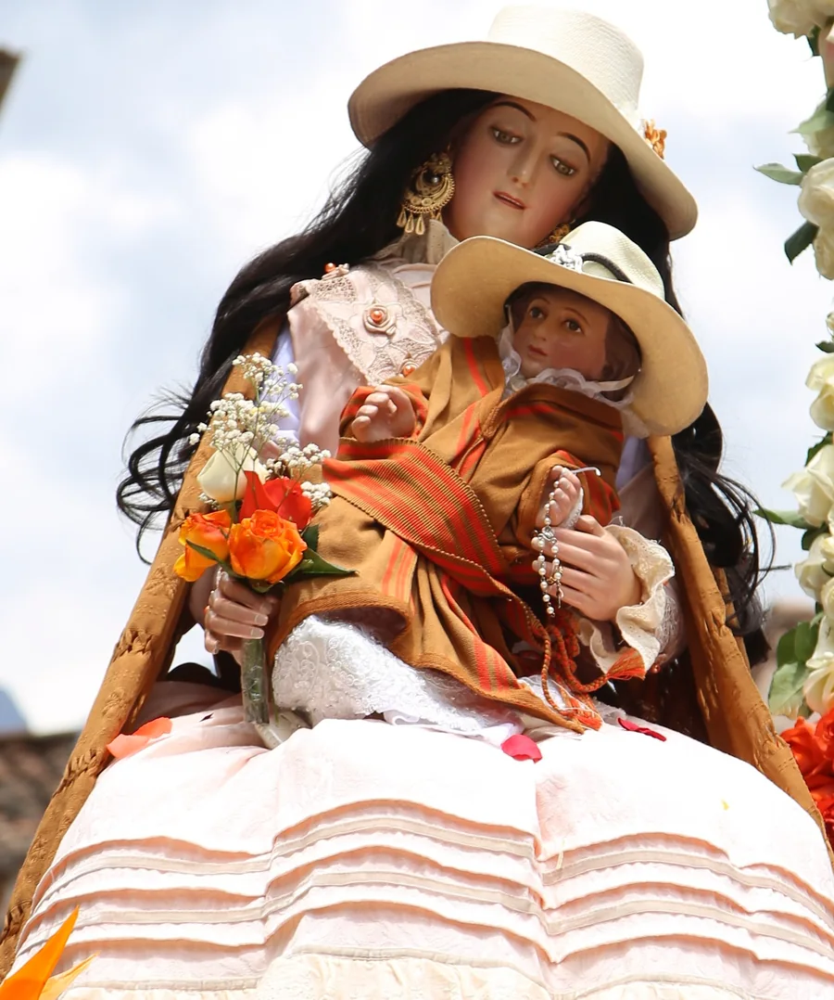

Capitán de la cuadrilla del Mozo Danza
Daniel Reeves Córdova
y familia
Invitación
El capitán de la cuadrilla del Mozo Danza, Daniel Reeves Córdova y familia, tienen el agrado de invitarle cordialmente a la víspera de nuestra tradicional fiesta patronal en homenaje a la Virgen Peregrina «Mamá Pillicha», patrona del distrito de San Marcos, que se realizará el viernes 23 de octubre de 2026 en la ciudad de Huaraz.
Programa de víspera
Viernes 23 de octubre de 2026
- 10:00 amRecepción de los cajeros del Mozo Danza «Hermanos Anaya»
- 12:30 pmAlmuerzo en casa del capitán
- 2:00 pmVisita de la cuadrilla a los mayordomos, capitana de palmas, familiares y amigos sanmarquinos residentes en Huaraz
- 6:00 pmCena en casa del capitán
- 7:00 pmMisa de víspera en el Sagrario San Sebastián y adoración de la cuadrilla a la Virgen Peregrina
Día central
Sábado
24
de octubre de 2026
- 11:00 amMisa en honor a la VirgenSagrario de San Sebastián
- 12:00 pmProcesión de la sagrada imagenPor las principales calles de la ciudad de Huaraz
- 2:00 pmCompartir y baile generalIngreso al local designado
¿Dónde?
Toque un lugar para ver su mapa
¡Los esperamos!
Compartir por WhatsAppDaniel Reeves Córdova y familia · Huaraz, octubre 2026